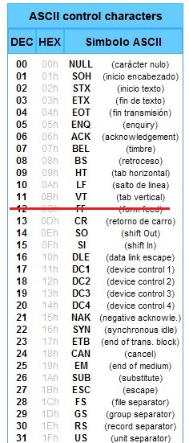

Commands are entered as a sequence of bytes separated by semicolons.
Example
ESC;@ or 1b;40
Bytes can be written in the following formats:
- The semicolon is used as a separator. To enter a character, specify 3B;
- 00-FF - Two hexadecimal digits. Allowed 0-9,A-F or a-f.
- ASCII control characters (character code 0-31, 0x00-0x1f) can be
specified as a mnemonic (ESC,STX). See image below.
- Other printed ASCII characters (character code 33-126), in addition to a
space, can be entered as is.
